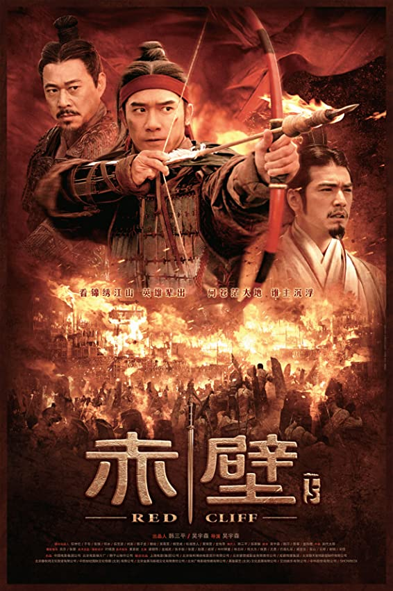

八卦阵一战，孙刘联军力挫曹兵之锐气。曹操（张丰毅 饰）为此忧心忡忡，加之北方将士因水土不服，死伤过重，更令其头风病发作，幸得侍女骊姬（小宋佳 饰）陪伴照顾。孙尚香（赵薇 饰）易容潜入曹营，借士官长（佟大为 饰）垂青，窃取军情。为了适应水战，曹操采纳荆州降将蔡瑁、张允的意见，将战船用铁锁相连。此后，曹操帐下谋士蒋干（师小红 饰）主动请缨前去拜访故友周瑜（梁朝伟 饰）刺探虚实。周瑜将计就计，假借酒醉泄露军机，让蒋干带回假情报，曹操一怒之下误杀了蔡瑁张允。曹操将因瘟疫致死的将士尸体投入江水，名曰“鬼兵”，意欲扰乱孙刘联盟之军心，小乔（林志玲 饰）见此情景，遂决定夜探曹营，劝其退兵。眼看万事具备，但是风向不对，周瑜遂派鲁肃（侯勇 饰）找诸葛亮（金城武 饰）寻助……